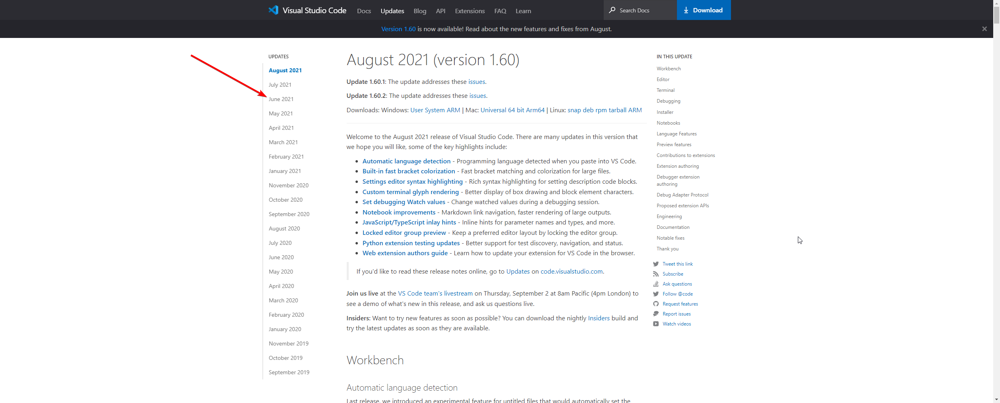
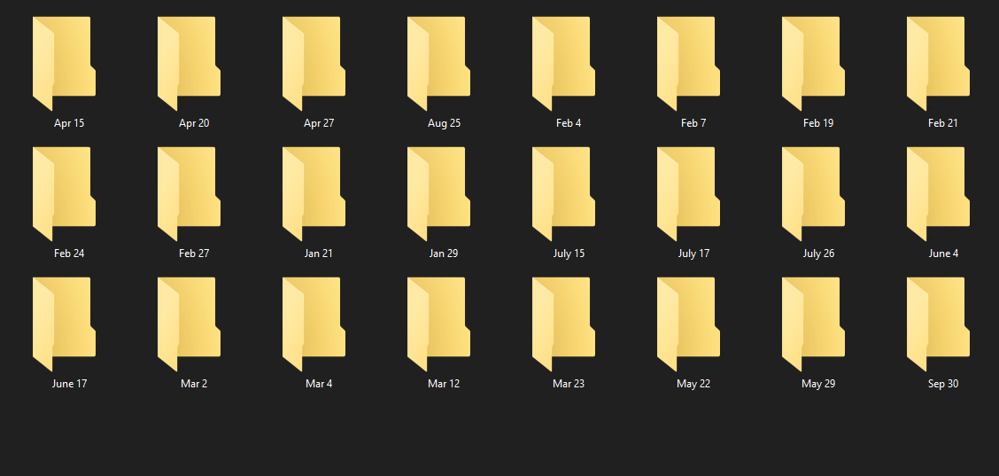
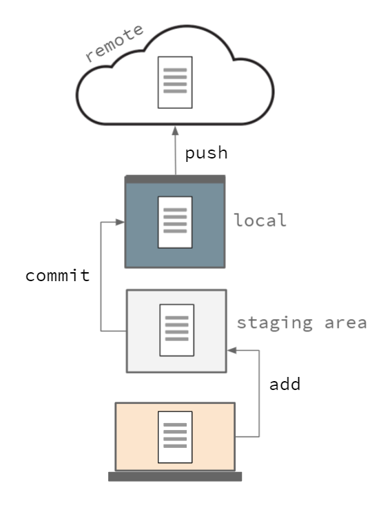
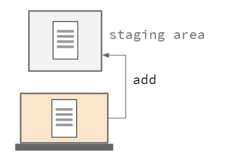
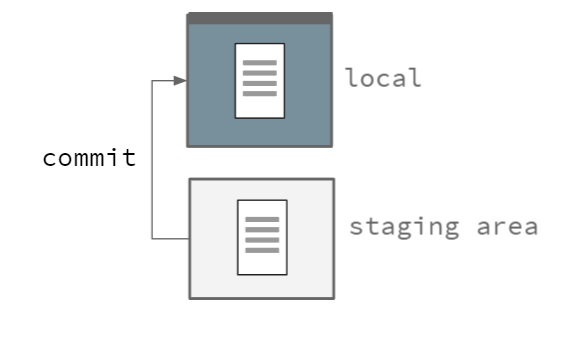
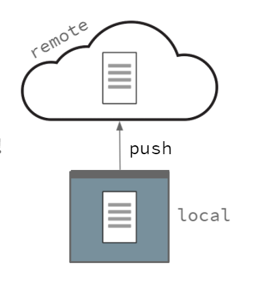

Introduction to Git & GitHub
Slides are available at https://kieranwood.ca/intro-to-git
If you want to participate during the demo please also:
signup for a GitHub account, and download Github Desktop
Who am I?
I'm kieran, and I'm a student at the university who uses git and GitHub nearly every day
What are we going to do today
- Making sure you are set up with GitHub Desktop
- What is Git/GitHub and why would you want to use it?
- Overview of the Git workflow
- Hands-on demo using GitHub
- Some extra features of Git
Some setup steps
If you haven't yet please sign up for a GitHub account, and download Github Desktop if you want to participate in the demo
Version Management
What is Version Management?
Version management refers generally to systems that help track changes in a project, and/or different versions
Why keep old/different versions?
It may seem redundant to keep old versions, but there are good reasons like:
- If only old versions worked for old systems
- If new versions have a major break in them you can rollback
- If people preferred how the old system operated
- etc...
Comes in many shapes and sizes
Naming systems
- Dates August 2017, Q2 2019, October 14 2021 etc.
- IOS 7, 8, 9, 10 etc.
- Python 2.4, 2.5, 2.6, 2.7, 3.0, 3.1 etc.
- Android KitKat, Lollipop, Marshmallow etc.
Software To Help do version management:
- Git (Most important!), SVN, Mercurial, Perforce
- Google Docs, Google Sheets, OneDrive etc.
- Many more...
A story of how not to do it
When I was but a wee lad...
Lessons learned so far
- I REALLY don't know italian
- Keeping dated backups is handy
- version management helps me see how far I've come
Issues with this Version Management System
- Copies of project start taking up a lot of space
- Ordered by date, so have to dig through to see what's been changed
- All documentation of changes was manual, and didn't tell me what actually changed in the files line-by-line
- If someone wanted to help me they would have to download each update folder by folder to have old versions
- Using Google Translate instead of asking someone who spoke Italian what the software said... (not fixed by version management)
This is where Git comes in
git is a tool that makes version management MUCH simpler
Why is git better?
compared to my old system git will let you
- Uses much less space
- Go back in time easily
- Multiple versions
- Let's you add messages so you know what each change was at a glance
- Collaborate easily with tools like GitHub
- Ubiquitous system
Terms
- Repo/Repository: Basically just a fancy name for a folder where the changes are tracked with git
- Commit:
- Staging Area:
Usage
How can I use git?
There are a few options, you can either use it at the command line (I will call it the CLI version which can be downloaded here), or you can use a visual app like GitHub Desktop
Git Flow
- Create or clone a repo
- Add our changes that we want to save
- Commit (save) our changes
- Push our commit
- Repeat steps 2 - 4 as you develop your project
Git Flow
Step 1; Git Init/Clone
We use this command to create a new repository
You can think of a repository as a folder that holds all the files you are interested in managing
Step 2; Add Your Changes
Change your files, this can be any CUD operations (Create, update, delete), then add them to the staging area
Step 3; Commit Changes
Saving the changes we stored in the staging area is called committing your changes
Step 4; Push Changes
Once your changes are committed, you can push them to the remote repository. Once they are pushed, your teammates can start working off of the changes you made!
Demo
What we're going to do
- Create a repo on github
- Clone it locally
- Make some changes
- Add & Commit the changes
- Push the changes to github
Step 1; Git Init on GitHub
Head to github.com and login. Then hit the + in the corner and click on New Repository
Step 1; Git Init on GitHub
- Enter a name
- Enter a description
- Choose public or private
- And check off the box for
- Add a README file
- Hit Create Repository
Step 1.5; Git Clone
Now we need to get the files locally, to do this go into GitHub Desktop and hit File --> Clone Repository. This should load a list of your projects on Github and let you select where to put the files (hit refresh if it's not there).
Step 2; Make & Add Changes
Go wherever you saved the repository and edit the README.md file to add what you want (any text editor like Notepad or TextEdit will work). GitHub desktop combines adding your changes with the next step by selecting the changed files in the program.
Step 3; Commit your changes
Now you have added your files you need to add a commit message (and optionally a description), and then hit Commit to main
Step 4; Push your changes
Now the changes are made you can push them to your repo, and you will see the changes on GitHub (remember to tell others to pull when you make a change)!
Extra Features
Branches
Merging
Using Git Remotely at the command line
How does the git command line work?
The flow is the same, you just run the following commands
- Create the repo in GitHub Desktop or on the GitHub site
- Clone the repository using GitHub desktop, or
git clone https://github.com/username/repo-name - Once you have added/changed/deleted your files you add them to "the stage" (also called staging your files) with:
(The . means add everything in this folder)git add . - Commit your staged changes to the git history with a message using
git commit -m "Your message goes here" - Push your commits in Github Desktop, or at the command line using
git push